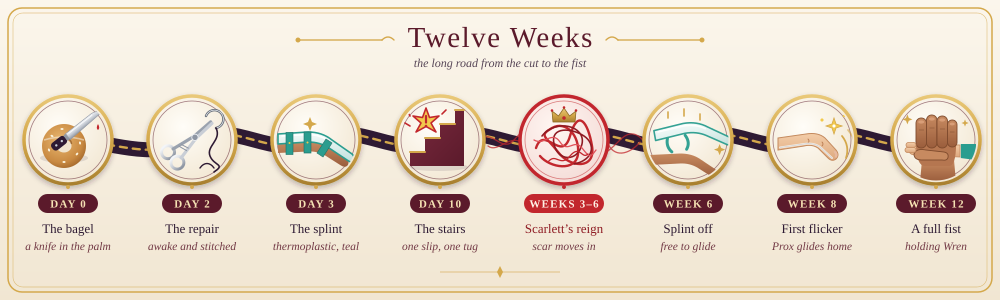
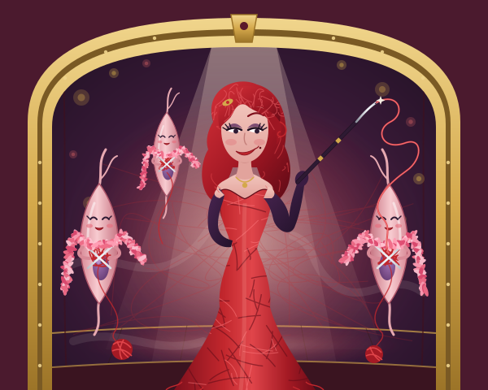
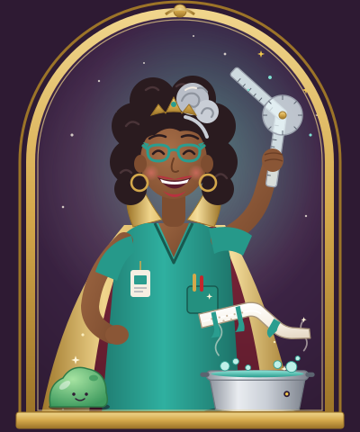
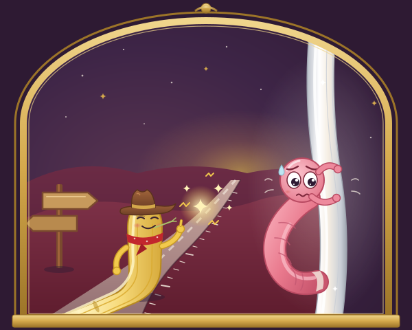
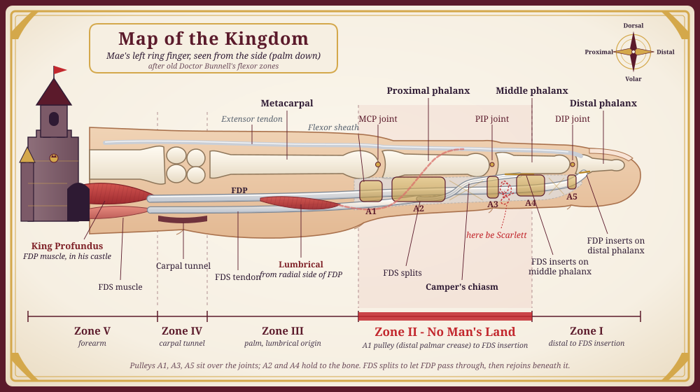

<title>GLIDE: The Musical</title>
<link rel="preconnect" href="https://fonts.googleapis.com"><link rel="preconnect" href="https://fonts.gstatic.com" crossorigin>
<link rel="stylesheet" href="https://fonts.googleapis.com/css2?family=Playfair+Display:ital,wght@0,700;0,900;1,400&family=Cormorant+Garamond:ital,wght@0,400;0,600;1,400&family=Inter:wght@500;600&display=swap">
<style>
/* Layout: a theatre at night. Dark plum house, a gold-lit programme column, the stage (cover) up front. Single deliberate dark look. */
:root {
  color-scheme: dark;
  --house: #1d1220; --stage: #2e1a33; --velvet: #5b1a2b; --gold: #d4a84b; --gold-dim: #a9864a;
  --paper: #f3e9d8; --ink: #efe4d2; --muted: #b9a7a4; --line: rgba(212,168,75,.28); --crimson: #e0525a; --teal: #4fc0b0;
  --display: 'Playfair Display', Georgia, 'Times New Roman', serif;
  --body: 'Cormorant Garamond', Georgia, 'Times New Roman', serif;
  --ui: 'Inter', system-ui, -apple-system, 'Segoe UI', sans-serif;
}
* { box-sizing: border-box; }
body { background: var(--house); color: var(--ink); font-family: var(--body); font-size: 19px; line-height: 1.5; padding-inline: 16px; padding-block: 0 48px; }
h1, h2, h3 { font-family: var(--display); text-wrap: balance; margin: 0; }
a { color: var(--gold); }
:focus-visible { outline: 2px solid var(--gold); outline-offset: 3px; }
.wrap { max-width: 860px; margin: 0 auto; }
.kicker { font-family: var(--ui); font-size: 12px; font-weight: 600; letter-spacing: .22em; text-transform: uppercase; color: var(--gold); }

/* cover */
.cover { position: relative; margin: 0 -16px; overflow: hidden; background: var(--stage); }
.cover img { width: 100%; max-height: 92vh; object-fit: cover; object-position: center bottom; display: block; }
.cover .t { position: absolute; inset: 7% 0 auto; text-align: center; padding-inline: 16px; }
.cover h1 { font-size: clamp(64px, 16vw, 150px); font-weight: 900; letter-spacing: .12em; color: var(--gold); line-height: 1; text-shadow: 0 4px 24px rgba(0,0,0,.6); }
.cover .sub { font-family: var(--display); font-style: italic; font-size: clamp(22px, 4vw, 34px); color: var(--paper); text-shadow: 0 2px 10px rgba(0,0,0,.7); }
.cover .tag { font-family: var(--ui); font-size: 12px; letter-spacing: .2em; text-transform: uppercase; color: var(--paper); opacity: .9; margin-top: 12px; text-shadow: 0 1px 6px rgba(0,0,0,.9); }

nav { position: sticky; top: env(safe-area-inset-top, 0px); z-index: 5; background: rgba(29,18,32,.94); backdrop-filter: blur(6px); border-bottom: 1px solid var(--line); margin: 0 -16px; padding: 10px 16px; }
nav ul { list-style: none; display: flex; gap: 6px 18px; flex-wrap: wrap; justify-content: center; margin: 0; padding: 0; }
nav a { font-family: var(--ui); font-size: 12px; font-weight: 600; letter-spacing: .14em; text-transform: uppercase; text-decoration: none; color: var(--muted); }
nav a:hover { color: var(--gold); }

section { padding-block: 56px 8px; scroll-margin-top: 56px; }
section > h2 { font-size: clamp(30px, 5vw, 44px); color: var(--paper); margin: 6px 0 20px; }
.lede { font-size: 21px; }
.two { display: grid; grid-template-columns: repeat(auto-fit, minmax(280px, 1fr)); gap: 28px; }
.two > * { min-width: 0; }
h4 { font-family: var(--ui); font-size: 12px; letter-spacing: .2em; text-transform: uppercase; color: var(--gold); margin: 0 0 8px; }
.note { border-left: 2px solid var(--gold); padding-left: 18px; font-style: italic; }
.credits { list-style: none; padding: 0; margin: 24px 0 0; font-family: var(--ui); font-size: 13px; color: var(--muted); display: grid; gap: 4px; }

.members { display: grid; grid-template-columns: repeat(auto-fill, minmax(260px, 1fr)); gap: 22px; }
.member { background: var(--stage); border: 1px solid var(--line); border-radius: 10px; overflow: hidden; display: flex; flex-direction: column; }
.member img { width: 100%; aspect-ratio: 5/4; object-fit: cover; display: block; }
.member .mb { padding: 14px 16px 18px; }
.member h3 { font-size: 22px; color: var(--paper); }
.role { font-family: var(--ui); font-size: 11px; letter-spacing: .12em; text-transform: uppercase; color: var(--gold); margin: 4px 0 8px; }
.member p { margin: 0; font-size: 17px; }

.figure { background: var(--paper); border-radius: 10px; padding: 10px; overflow-x: auto; }
.figure img { display: block; min-width: 640px; width: 100%; }
.cap { color: var(--muted); font-style: italic; font-size: 16px; margin-top: 10px; }
.motifs { list-style: none; padding: 0; margin: 0; display: grid; gap: 14px; }
.motifs q { display: block; font-family: var(--display); font-style: italic; color: var(--paper); font-size: 18px; quotes: '\201C' '\201D'; }
.motifs span { color: var(--muted); font-size: 16px; }
.tips { margin: 0; padding-left: 20px; display: grid; gap: 8px; }
.box { background: var(--stage); border-radius: 10px; padding: 18px 20px; border-top: 3px solid var(--velvet); }
.box.teal { border-top-color: var(--teal); }

.act { font-family: var(--ui); font-size: 12px; letter-spacing: .22em; text-transform: uppercase; color: var(--gold); margin: 26px 0 10px; }
.song { border-top: 1px solid var(--line); }
.song:last-of-type { border-bottom: 1px solid var(--line); }
.song summary { list-style: none; cursor: pointer; display: flex; gap: 16px; align-items: center; padding: 16px 4px; }
.song summary::-webkit-details-marker { display: none; }
.no { font-family: var(--display); font-weight: 900; font-size: 30px; color: var(--gold); width: 1.4em; text-align: right; font-variant-numeric: tabular-nums; }
.st { flex: 1; min-width: 0; display: flex; flex-direction: column; }
.title { font-family: var(--display); font-weight: 700; font-size: 23px; color: var(--paper); }
.by { font-style: italic; color: var(--muted); font-size: 16px; }
.chev { width: 10px; height: 10px; border-right: 2px solid var(--gold); border-bottom: 2px solid var(--gold); transform: rotate(45deg); transition: transform .2s; flex: none; margin-right: 6px; }
.song[open] .chev { transform: rotate(-135deg); }
.songbody { padding: 0 4px 28px; }
.notes { background: var(--stage); border-radius: 8px; padding: 12px 16px; font-size: 17px; margin-bottom: 18px; }
.notes p { margin: 0 0 6px; }
.notes b { font-family: var(--ui); font-size: 11px; letter-spacing: .14em; text-transform: uppercase; color: var(--gold); margin-right: 6px; }
.lyrics { columns: 2 300px; column-gap: 36px; }
.stanza { break-inside: avoid; margin-bottom: 16px; }
.stanza p { margin: 0; font-size: 18px; line-height: 1.4; }
.stanza.c p { font-style: italic; color: #dccfba; }
.sec { font-family: var(--ui); font-size: 10.5px; letter-spacing: .14em; text-transform: uppercase; color: var(--gold-dim); margin-bottom: 2px; }
.sec b { color: var(--gold); }
.interval { text-align: center; font-family: var(--display); font-style: italic; color: var(--gold); padding: 22px 0; font-size: 22px; }
.interval span { font-family: var(--body); color: var(--muted); font-size: 17px; }

.gloss { columns: 2 280px; column-gap: 36px; margin: 0; }
.g { break-inside: avoid; margin-bottom: 14px; }
.g dt { font-family: var(--display); font-weight: 700; color: var(--paper); }
.g dd { margin: 0; font-size: 17px; }
footer { text-align: center; padding-top: 60px; }
footer .line { font-family: var(--display); font-style: italic; font-size: clamp(28px, 6vw, 44px); color: var(--paper); }
footer img { max-width: 520px; width: 100%; margin: 28px auto 0; border-radius: 10px; display: block; }
@media (prefers-reduced-motion: reduce) { .chev { transition: none; } }
@media (max-width: 480px) { body { font-size: 18px; } .no { font-size: 24px; } .title { font-size: 20px; } }
</style>

<header class="cover">
  
  <div class="t"><h1>GLIDE</h1><div class="sub">The Musical</div><div class="tag">Two ways to lose a tendon: tear it, or glue it. Twelve weeks to learn a third.</div></div>
</header>
<nav aria-label="Programme"><ul><li><a href="#story">Story</a></li><li><a href="#cast">Cast</a></li><li><a href="#map">Map</a></li><li><a href="#songs">Songs</a></li><li><a href="#glossary">Glossary</a></li></ul></nav>

<main class="wrap">
<section id="story">
  <div class="kicker">Left Hand Theatre presents · A fairytale in twelve weeks</div>
  <h2>The Story</h2>
  <div class="two">
    <div><h4>Act One</h4><p>7:45 on a Tuesday in October, inside the left hand of Mae, a hand surgeon and a busy mum. The holding hand is proud of itself. It grips the coffee, the phone, the lunchbox and Wren, and it has helped mend a thousand other hands. Up in his forearm castle, KING PROFUNDUS pulls and the fingers close. Down in the ring finger, PROX (his daughter) and TIP (the fingertip&#x27;s boy) glide as one long-married tendon, called &quot;Proxantip&quot; by everybody. Above, Mae won&#x27;t let Wren cut her own bagel. She holds it in her palm herself, and the knife slips. The deep tendon is cut in Zone Two, the stretch the old maps call No Man&#x27;s Land. The King&#x27;s recoil drags Prox back into the palm, and Tip slides away towards the end of the finger. Prox stops in the palm, not at the wrist, only because little LUMBO hangs on to her side. DIGBY the nerve has been cut too, and half of him has gone quiet.</p><p>That night Prox realises that she and Tip were always two. She refuses her father&#x27;s &quot;come home&quot; and sets off back through No Man&#x27;s Land. On Day Two the surgeon DR TEO OKAFOR, whom Mae trained, threads the couple back together while Mae lies awake on the table. THE PULLEYS have spent the night worrying about being vented. Tip haggles the repair up to six strands. One pulley gets a small nick, and the tendon glides. On Day Three THEA, the hand therapist, takes over. She makes a thermoplastic splint and lays down the rules: move early, place and hold, hand up high. To the King she says, &quot;Pull with a whisper, Your Majesty.&quot; Then, on Day Ten, Wren trips on the stairs. Mae grabs her with the splinted hand and the King pulls with everything he has. The stitches creak and hold, just. That night the guilty King swears he will never pull again. Tip begs not to be moved. Mae decides to skip her exercises, and from the dark of No Man&#x27;s Land a velvet voice purrs: hold still.</p></div>
    <div><h4>Act Two</h4><p>For weeks three to five Mae tells clinic she is doing the exercises every hour. She isn&#x27;t. SCARLETT ADHESION, the scar-tissue queen of No Man&#x27;s Land, moves in with her backing trio THE FIBROBLASTS. She sings Tip to sleep against the tunnel wall, keeps the guilt-frozen King to his vow, and croons up to Mae herself about the cost of a rupture. Tip goes quiet. Meanwhile Digby the nerve sets off on a deadpan road trip back down the finger, a millimetre a day, and Thea tracks his tingle with her taps. Above, Wren cuts her own bagel on the board, and Mae lets her. At six weeks the splint comes off. Thea says &quot;Make a fist for me&quot;, and the fingertip won&#x27;t bend.</p><p>By week eight Teo is talking about a second operation. The King finally wants to act, and wants to rip Tip free in one almighty heave. Prox stops him. Not like Day Ten, not like never, but like this: she teaches her father the whisper. Thea&#x27;s blocking exercises begin and a frightened Tip agrees to be pulled. Something flickers. Five degrees, then ten, then forty. Then it&#x27;s week twelve, a January morning and the first day of term. The ring slides back over the knuckle, and all three daughters can close. The Pulleys take a bow, Lumbo is finally thanked, and Digby arrives more or less on time. Scarlett has been remodelled, not destroyed, and now faces the right way. At the school gate Mae ties a shoelace and lets go of a small hand. Then she says the final words of the show to her own hand.</p></div>
  </div>
  <h4 style="margin-top:28px">Twelve weeks in the left hand of Doctor Mae</h4>
  <div class="figure"></div>
  <h4 style="margin-top:36px">A note from the surgeon</h4>
  <div class="note"><p>I have said &quot;never the bagel in your palm&quot; to more patients than I can count. I have shown the photographs at Christmas parties. People have left early. So I would like to state, for the record, that this musical is entirely fictional, and that Mae is not me, and that I was holding an avocado.</p><p>Nobody writes songs about tendons, which is a shame, because the flexor tendon is the most romantic structure in the body. It is one line from the elbow to the fingertip. It lives in a wet tunnel, held to the bone by five fussy rings. When it is cut, its two halves fly apart. Then a surgeon stitches them back together in forty minutes, and everyone assumes that was the hard part.</p><p>It was not the hard part. The hard part is the twelve weeks afterwards, every hour, ten of each, in a splint you&#x27;re desperate to be out of, under a therapist you can&#x27;t out-argue. That&#x27;s when the real drama happens, quietly, at the kitchen kettle.</p><p>Thank you for coming. Please switch off your phones. If you are eating a bagel in the interval, there are chopping boards at the bar.</p><p>Make a fist for me. Now open. Enjoy the show.</p></div>
  <ul class="credits"><li>A contemporary pop musical in two acts, set entirely inside one left hand</li><li>Story, characters and medicine by the show&#x27;s creator, a hand surgeon who really should have known better</li><li>Book &amp; lyrics developed with Claude</li><li>Music generated with Suno</li><li>Programme illustrations developed with Claude</li><li>Anatomy consultant: the left hand in question (uncredited, splinted, now fully flexed)</li><li>Mae, Wren, Dr Teo Okafor and Thea are fictional. Any resemblance to real surgeons, therapists or bagels is purely anatomical.</li><li>No tendons were harmed in the making of this programme. One was harmed in the making of the plot.</li></ul>
</section>

<section id="cast">
  <div class="kicker">Who&rsquo;s who in the kingdom</div>
  <h2>The Cast</h2>
  <div class="members"><article class="member"><div class="mb"><h3>Prox &amp; Tip</h3><div class="role">the proximal and distal stumps of the ring-finger flexor digitorum profundus tendon (together: &quot;Proxantip&quot;)</div><p>PROX (King&#x27;s daughter, proximal stump) is thrilled to be back in No Man&#x27;s Land, having last been seen there being dragged into the palm. Credits: Grip (Kettle Rep), Cutlery Drawer (understudy) and a long run in Typing. She can count to ten every hour and does. TIP (fingertip&#x27;s boy, distal stump) has touched phones, noses and, regrettably, a bagel. Previous work: Pointing, Doorbell, and the closing beat of every fist you&#x27;ve ever made. He has never moved by himself and would prefer that not to come up. The couple have been married since before Mae could crawl and are now never more than three millimetres apart.</p></div></article><article class="member"><div class="mb"><h3>King Profundus</h3><div class="role">the flexor digitorum profundus muscle, ruler of the forearm castle</div><p>His Majesty returns to the stage after a long residency in the Forearm, where he has pulled every finger closed since birth. Credits: Gripping (Lead), The Steering Wheel (twice nightly) and the arm-wrestling scene in Christmas at the In-Laws. He has three daughters on one muscle belly, so when one is held back, nobody closes properly. He dislikes the word &quot;subtle&quot;. He is learning the word &quot;whisper&quot;. He would like it known that he did not mean to nearly tear anybody on Day Ten, and that he has been practising his library voice.</p></div></article><article class="member"><div class="mb"><h3>Scarlett Adhesion &amp; The Fibroblasts</h3><div class="role">scar tissue in the wrong place, outlaw queen of No Man&#x27;s Land, and her trio of collagen-laying builders</div><p>SCARLETT has haunted the flexor sheath since the days of three weeks in plaster, which she still calls &quot;the golden age&quot;. Credits: The Stiff Finger (long run), Rubber Bands of the 1970s (nostalgia tour) and Tenolysis: The Sequel. She is the only one in the kingdom who says &quot;darling&quot;. THE FIBROBLASTS (Type Three, Type Three and Type Three) lay collagen every which way, with no plans, no ruler and no straight lines. They clock on whenever the moving stops. By the curtain call Scarlett has had work done and lines up neatly as Type One. Don&#x27;t look so shocked.</p></div></article><article class="member"><div class="mb"><h3>Thea</h3><div class="role">the hand therapist and fairy godmother, a voice from Above</div><p>Thea turns theatre plaster into thermoplastic the way other godmothers turn pumpkins into carriages, with a warm water bath and absolutely no sympathy. Credits: Dorsal Blocking Splint (designer), Place and Hold (choreographer) and Ten More, My Love (an ongoing series). Her wand is a goniometer. Nobody has ever been impressed by it. She is the only person Mae cannot out-argue, and she would like the surgeons in the audience to remember that the operation took forty minutes and the next twelve weeks were hers. Hand above your heart, my love. Not your belly button.</p></div></article><article class="member"><div class="mb"><h3>Digby &amp; Lumbo</h3><div class="role">the ulnar digital nerve of the ring finger, and the lumbrical muscle</div><p>DIGBY (ulnar digital nerve) was stitched last in theatre, with thread finer than a hair, and is touring the finger at a millimetre a day, more or less. Credits: Feeling Things (It&#x27;s a Lot), Pins and Needles (one-man show), and an unfortunate ice-lolly season. He doesn&#x27;t talk about his cousin, the neuroma. LUMBO (lumbrical) grows straight off Prox&#x27;s side and is the reason she stopped in the palm and not at the wrist. Credits: Lumbrical Plus (a surprise hit), Paradoxical Extension and Nobody Knows What I Do. Tonight someone finally thanks him. He&#x27;s not crying. He&#x27;s a muscle.</p></div></article><article class="member"><div class="mb"><h3>The Pulleys</h3><div class="role">the annular pulleys Ay-one to Ay-five, gatekeepers of the finger tunnel</div><p>AY-TWO and AY-FOUR are grand dowagers and load-bearing, actually. They have held the tendon to the bone for decades and consider bowstringing a public scandal. Joint credits: Not Being Vented, Standards, and Whatever Would the Knuckles Say? Ay-four was vented a sliver on Day Two and has been dining out on it ever since. AY-ONE is cut for trigger finger every Tuesday under local and is past being surprised. AY-THREE and AY-FIVE share one line and would like it noted that nobody mentions them. Nobody mentions them in this bio either.</p></div></article><article class="member"><div class="mb"><h3>Mae, Wren &amp; Dr Teo Okafor</h3><div class="role">the humans, heard only as voices from Above</div><p>MAE is a hand surgeon, a mother and a terrible patient. Credits: Never the Bagel in Your Palm (lecture, three hundred performances) and, for one morning only, The Bagel in Her Palm. She wrote the protocol and has been told to do ten more. WREN is small, says very little and gets the bagel in the end, on the board. DR TEO OKAFOR was trained by Mae and returns the favour wide awake with no tourniquet. Credits: The Lightning-Bolt Incision, Four&#x27;s the Minimum and Mae&#x27;s Tuesday List (covering). He says &quot;Now open&quot; exactly the way she taught him.</p></div></article></div>
</section>

<section id="map">
  <div class="kicker">Map of the kingdom</div>
  <h2>Where It All Happens</h2>
  <div class="figure"></div>
  <p class="cap">The ring finger of Doctor Mae&rsquo;s left hand, side view. Zone II, from the start of the tunnel to Big Sister&rsquo;s anchor, is the No Man&rsquo;s Land of old Doctor Bunnell&rsquo;s map, and Scarlett&rsquo;s favourite haunt.</p>
  <div class="two" style="margin-top:26px">
    <div class="box"><h4>Recurring themes</h4><ul class="motifs"><li><q>Through the sheath and past the pulleys, / one line from the elbow to the fingertip.</q><span>The couple&#x27;s wedding vow. It is sung whole in Song 1 and cut off mid-word by the knife. Prox sings it with the last word missing, and the Pulleys interrupt it. It&#x27;s restored in harmony on the operating table, and Tip forgets the ending on Day Ten. It&#x27;s sung whole again when the fist closes.</span></li><li><q>I never knew that we were two / until there was a space between.</q><span>Prox&#x27;s discovery in Song 2. The space shrinks to &#x27;three millimetres, never more&#x27; in theatre. Thea moves it to the gap between the tendon and the tunnel wall, and Scarlett threatens to fill it. Prox vows to &#x27;keep it open&#x27;, and in the finale &#x27;we glide on the space between.&#x27;</span></li><li><q>Hold still, hold still, / nothing tears if nothing moves.</q><span>It starts as a mum&#x27;s morning line to a wriggling child and becomes the villain&#x27;s lullaby. Thea answers with &#x27;Place and hold, and then let go&#x27;, and Tip turns it: &#x27;but nothing ever moves.&#x27; By the last scene it is just a shoelace again: &#x27;Hold still... done. Go on.&#x27;</span></li><li><q>Make a fist for me. / Now open.</q><span>Mae&#x27;s clinic catchphrase. Her trainee gives it back to her on the table, it fails when the splint comes off, and it brings the first flicker. In the show&#x27;s last line she says it to herself.</span></li><li><q>A little further every day, / a millimetre, more or less.</q><span>Digby&#x27;s deadpan nerve-regrowth road song (nerves really do grow about a millimetre a day). Prox picks it up and turns it into her plan for working Tip free.</span></li><li><q>Pull with a whisper, Your Majesty.</q><span>Thea&#x27;s prescription for the King. He goes from pulling with everything to never pulling, until his daughter finally teaches him this.</span></li><li><q>Every hour. (Tap, tap.)</q><span>The rep count and Tinel&#x27;s tap share one crisp double tick. Listen for it whenever someone counts, fibs about counting, or regrows.</span></li><li><q>Nobody mentions us.</q><span>Ay-three and Ay-five, every time. They are correct.</span></li></ul></div>
    <div class="box teal"><h4>From Thea&rsquo;s clinic</h4><ul class="tips"><li>Hand above your heart, my love. Not your belly button. Swelling is glue.</li><li>Little and often beats heroic and rare. Ten gentle reps every hour do far more good than one big heave at bedtime.</li><li>Place and hold, and then let go. Holding the finger still is not the same as resting it.</li><li>The splint is the wall at your back. Straight inside it, never past it, and don&#x27;t take it off to &#x27;just quickly&#x27; do the dishes.</li><li>Days five to twenty-one are the weakest the repair will ever be. Feeling better doesn&#x27;t mean it&#x27;s stronger.</li><li>Nerves regrow about a millimetre a day. Pins and needles are good news. Ice lollies can wait until spring.</li><li>Doing them every hour? Good. I&#x27;ll know if you aren&#x27;t. The goniometer always knows.</li></ul></div>
  </div>
</section>

<section id="songs">
  <div class="kicker">The complete lyrics</div>
  <h2>Musical Numbers</h2>
  <div class="act">Act One</div>
  <details class="song" id="song-1" open>
<summary><span class="no">1</span><span class="st"><span class="title">Got It In Hand</span><span class="by">The Company (the Holding Hand), Prox and Tip</span></span><span class="chev" aria-hidden="true"></span></summary>
<div class="songbody"><div class="notes"><p><b>The scene</b> 7:45 on a Tuesday in October, inside the left hand of Doctor Mae. The kingdom shows off its anatomy, Mae saws a bagel in her palm, and the knife cuts the ring-finger tendon in Zone Two.</p><p><b>Listen for</b> A ticking-clock hi-hat counts down to the cut. The couple&#x27;s &#x27;one line from the elbow to the fingertip&#x27; hook breaks off mid-word at the knife. Also listen for Mae&#x27;s catchphrase &#x27;Make a fist for me. Now open&#x27;, and the fast-rap roll call that names every structure in the finger.</p></div><div class="lyrics"><div class="stanza c"><div class="sec">Intro · <b>Company</b></div><p>A Tuesday in October, a quarter to eight,<br>in the left hand of Doctor Mae.</p></div><div class="stanza c"><div class="sec">Verse · <b>Company</b></div><p>Coffee in the left! (Check!)<br>Phone between the fingers! (Check!)<br>Lunchbox in the crook! (Check!)<br>and Wren across the road! (Mind the road!)<br>She&#x27;s a surgeon of the hand,<br>we&#x27;ve mended a thousand hands.<br>The right hand gets the credit,<br>we just hold the retractor. (Thanks.)</p></div><div class="stanza c"><div class="sec">Pre-Chorus · <b>Company</b></div><p>She says, &quot;Make a fist for me. Now open.&quot;<br>to a thousand hands.<br>(Make a fist!) (Now open!)<br>To a thousand hands!</p></div><div class="stanza c"><div class="sec">Chorus · <b>Company</b></div><p>We&#x27;ve got it in hand! (Got it in hand!)<br>The coffee, the keys, the phone and Wren!<br>Morning to night and round again,<br>we&#x27;ve got it in hand! (Hey!)<br>Not a drop, not a crumb, not a thing gets spilled,<br>we&#x27;re the holding hand! (The holding hand!)</p></div><div class="stanza c"><div class="sec">Verse · <b>Company</b></div><p>Up in his forearm castle,<br>King Profundus says hello!<br>He doesn&#x27;t do subtle, he doesn&#x27;t do slow,<br>he PULLS, and the fingers close!<br>Three daughters on one muscle,<br>where one goes, all three go.<br>The ring one is his pride.<br>(Bit much.) (He heard that.)</p></div><div class="stanza c"><div class="sec">Post-Chorus · <b>Company</b></div><p>Prox-an-tip! Prox-an-tip!<br>The King&#x27;s own girl and the fingertip&#x27;s boy!<br>Prox-an-tip! Prox-an-tip!<br>So long together they forgot that they were two!</p></div><div class="stanza "><div class="sec">Verse · <b>Prox</b></div><p>I&#x27;m Prox, the King&#x27;s own girl,<br>born in the forearm, running deep,<br>all the way down to the end of the finger,<br>where my Tip is waiting for me.</p></div><div class="stanza "><div class="sec">Verse · <b>Tip</b></div><p>And I&#x27;m Tip, the fingertip&#x27;s boy,<br>Prox, it&#x27;s me, I hold on at the very end,<br>right where the finger stops, I wait for you.<br>Married. It&#x27;s a whole thing.</p></div><div class="stanza c"><div class="sec">Hook · <b>Company</b></div><p>Through the sheath and past the pulleys,<br>one line from the elbow to the fingertip.<br>Big Sister Superficialis splits in two and hugs Prox from beneath!<br>The Pulleys hold her to the bone, or else she&#x27;d bowstring!<br>Lumbo, hi, nobody knows what he does!<br>Digby, ulnar side, feels everything! (It&#x27;s a lot.)</p></div><div class="stanza c"><div class="sec">Chorus · <b>Company</b></div><p>We&#x27;ve got it in hand! (Got it in hand!)<br>The coffee, the keys, the phone and Wren!<br>Morning to night and round again,<br>we&#x27;ve got it in hand! (Hey!)<br>Not a drop, not a crumb, not a thing gets spilled,<br>we&#x27;re the holding hand! (The holding hand!)</p></div><div class="stanza c"><div class="sec">Hook · <b>Company</b></div><p>Through the sheath and past the pulleys,<br>one line from the elbow to the fingertip.</p></div><div class="stanza c"><div class="sec">Verse · <b>Company</b></div><p>Every patient, every Christmas,<br>she shows the photos on her phone! (Ew!)<br>Never the avocado,<br>never the bagel in your palm!<br>Every clinic, every party,<br>says it slow and says it twice:<br>never the avocado,<br>never the bagel in your palm! (Say it!)</p></div><div class="stanza c"><div class="sec">Bridge · <b>Company</b></div><p>She says, &quot;Wren, hold still! Sun cream! Shoes on!&quot;<br>Wren says, &quot;I can cut it!&quot;<br>Mae says, &quot;Knives are sharp. Give it here, you&#x27;ll be late.&quot;</p></div><div class="stanza c"><div class="sec">Build · <b>Company</b></div><p>And she holds the bagel in her palm,<br>the ring finger curled around,<br>the clock on the wall, the knife in her right,<br>sawing, sawing down...<br>(got it in hand... got it in hand...)</p></div><div class="stanza "><div class="sec">Final Hook · <b>Prox &amp; Tip</b></div><p>Through the sheath and past the pulleys,<br>one line from the elbow to the-</p></div><div class="stanza "><div class="sec">Interlude · <b>Prox</b></div><p>Tip? ...Tip?<br>It&#x27;s me, it&#x27;s Prox, where did you go?<br>And faint from the end of the finger,<br>he calls back, &quot;Prox? ...Prox?&quot;</p></div><div class="stanza c"><div class="sec">Verse · <b>Company</b></div><p>And the King roars, &quot;Come home! Come home!&quot;<br>The King hauls back his daughter,<br>he drags her to the palm,<br>and as Mae opens up her hand,<br>Tip slides away, away,<br>down, down the finger<br>to the end of the world.</p></div><div class="stanza c"><div class="sec">Verse · <b>Company</b></div><p>And Digby whispers, &quot;Half of me&#x27;s gone quiet.&quot;<br>Mae looks at the cascade,<br>holds the middle joint, says, &quot;Bend the tip.&quot;<br>...Nothing.</p></div><div class="stanza c"><div class="sec">Breakdown · <b>Company</b></div><p>Zone Two! No Man&#x27;s Land!</p></div><div class="stanza c"><div class="sec">Outro · <b>Company</b></div><p>And Mae says, &quot;Of course it&#x27;s Zone Two.&quot;</p></div></div></div></details><details class="song" id="song-2">
<summary><span class="no">2</span><span class="st"><span class="title">Half of a Name (Proxantip)</span><span class="by">Prox, King Profundus, and the Company as Lumbo&#x27;s patter chorus</span></span><span class="chev" aria-hidden="true"></span></summary>
<div class="songbody"><div class="notes"><p><b>The scene</b> Day nought, in the dark of the palm. Prox finds she and Tip were always two, refuses her father&#x27;s &#x27;Come home&#x27;, and sets off back through No Man&#x27;s Land, with Lumbo along because he&#x27;s attached.</p><p><b>Listen for</b> The &#x27;space between&#x27; chorus first appears here. In the patter, every time the King heaves the finger goes straighter, not bent: that&#x27;s lumbrical plus, a real sign. Also: &#x27;Nearer three centimetres, technically.&#x27;</p></div><div class="lyrics"><div class="stanza c"><div class="sec">Intro · <b>Company</b></div><p>Day nought, the dark of the palm,<br>the finger in a bandage, and Mae can&#x27;t sleep.</p></div><div class="stanza "><div class="sec">Verse · <b>Prox</b></div><p>Hi. I&#x27;m Prox. Well, half of it.<br>The King&#x27;s girl, from up the arm.<br>One knife, one bagel, one very bad Tuesday,<br>and Papa yanked me back into the palm<br>like a blind on a string.<br>Half of a name on the door,<br>and the other half&#x27;s not home.</p></div><div class="stanza c"><div class="sec">Patter · <b>Company</b></div><p>Lumbo! Lumbo! The worm on her side!<br>He grows off her flank and he&#x27;s down for the ride!<br>He held on, he held on, that&#x27;s why she stopped in the palm,<br>and not at the wrist! Not at the wrist!<br>Nobody ever thanks the lumbrical!</p></div><div class="stanza "><div class="sec">Call · <b>King Profundus</b></div><p>Prox! It&#x27;s your father! Come home!<br>Up the tunnel, up the arm, back where you belong!<br>I&#x27;ll heave with every fibre in the forearm,<br>I&#x27;ll pull and I&#x27;ll pull till you&#x27;re home with me!<br>Prox! Come HOME!</p></div><div class="stanza c"><div class="sec">Patter · <b>Company</b></div><p>Lumbo! He&#x27;s pulling, he&#x27;s pulling, he&#x27;s pulling,<br>and the finger goes straight when it ought to be curling!<br>The King pulls on her and she pulls on him,<br>and he&#x27;s tied to the extensor hood, limb to limb,<br>so the harder he heaves, the straighter it goes!<br>Paradoxical extension, Mae says. Lovely.<br>Lumbrical plus! Nobody knows what he does,<br>and NOW they do!<br>(Lumbo&#x27;s sorry! Sorry!)</p></div><div class="stanza "><div class="sec">Verse · <b>Prox</b></div><p>Me and Tip, they said us as one word, Proxantip,<br>since before Mae learned to crawl.<br>Same tunnel, same timing, same side of the bed.<br>I pulled, he curled the very tip,<br>and we never thought at all.<br>Now he&#x27;s slid away down the finger,<br>nearly to the end of the world.<br>And the thing about Tip?<br>He&#x27;s never moved by himself. Not once.<br>He only bends when I pull.</p></div><div class="stanza "><div class="sec">Pre-Chorus · <b>Prox</b></div><p>And I pull, and nothing answers.<br>I pull, and the tunnel&#x27;s empty.<br>Through the sheath and past the pulleys,<br>one line from the elbow to the...</p></div><div class="stanza "><div class="sec">Chorus · <b>Prox</b></div><p>I never knew that we were two<br>until there was a space between.<br>An empty tunnel where he should be,<br>the longest inch I&#x27;ve ever seen.<br>I never knew that we were two<br>until there was a space between.</p></div><div class="stanza c"><div class="sec">Post-Chorus · <b>Company</b></div><p>We were two. (Ooh.)<br>We were two,<br>and I never even counted.<br>(One... two...)<br>Turns out it&#x27;s two.<br>Nearer three centimetres, technically.</p></div><div class="stanza c"><div class="sec">Verse · <b>Company</b></div><p>Thank you, Lumbo. Noted.<br>So I&#x27;m going back down the tunnel,<br>back past the rings, one by one,<br>through No Man&#x27;s Land on the old map,<br>to the boy at the end of the world.<br>I can&#x27;t move without Papa,<br>and Tip can&#x27;t move without me.<br>Papa won&#x27;t come. Tip can&#x27;t come.<br>So, fine. It&#x27;s me.<br>How, exactly?</p></div><div class="stanza "><div class="sec">Bridge · <b>King Profundus</b></div><p>Prox, it&#x27;s Papa. Come home, my girl, stay where it&#x27;s safe,<br>up in the forearm, close to me.<br>No Man&#x27;s Land is no place for a daughter of mine,<br>and I&#x27;ve lost one half of the name already.<br>Come home, my girl, stay where it&#x27;s safe.</p></div><div class="stanza "><div class="sec">Bridge · <b>Prox</b></div><p>It&#x27;s Prox, Papa. Listen to me.<br>I came when you called. I always came.<br>But this time the pulling&#x27;s the problem.<br>You pulled me here, Papa.<br>You can&#x27;t pull me home.</p></div><div class="stanza c"><div class="sec">Patter · <b>Company</b></div><p>Lumbo! Finger&#x27;s gone straight again, Your Majesty!<br>Just so you know! Just so you know!<br>And news from Above, the news from Above!<br>The surgeon comes on Thursday! Day two!</p></div><div class="stanza c"><div class="sec">Key Change · <b>Company</b></div><p>Day two!</p></div><div class="stanza "><div class="sec">Final Chorus · <b>Prox</b></div><p>I never knew that we were two<br>until there was a space between.<br>Wait for me, Tip. You can&#x27;t go far.<br>I&#x27;m coming down through No Man&#x27;s Land.<br>I never knew that we were two<br>until there was a space between.</p></div><div class="stanza "><div class="sec">Post-Chorus · <b>Prox</b></div><p>We were two! (We were two!)<br>Every pulley, every inch,<br>and this time I&#x27;m counting!<br>(One! Two!)</p></div><div class="stanza c"><div class="sec">Outro · <b>Company</b></div><p>And Lumbo comes too. He has to. He&#x27;s attached.</p></div><div class="stanza c"><div class="sec">Tag · <b>Company</b></div><p>Day two.</p></div></div></div></details><details class="song" id="song-3">
<summary><span class="no">3</span><span class="st"><span class="title">Vent Me Not</span><span class="by">The Pulleys (Ay-four leading), Ay-one, and Tip</span></span><span class="chev" aria-hidden="true"></span></summary>
<div class="songbody"><div class="notes"><p><b>The scene</b> Day one, in the finger tunnel. The pulley dowagers panic that tomorrow&#x27;s surgeon will vent them. Tip shows off, then admits he has never moved by himself. A whispered warning introduces Scarlett Adhesion.</p><p><b>Listen for</b> A mock-operetta patter song. The rule &#x27;Ay-four, or a little of Ay-two, but NEVER both&#x27; is real surgical teaching. Ay-one&#x27;s deadpan Tuesday trigger fingers, and Ay-three and Ay-five sulking that &#x27;Nobody mentions us&#x27;.</p></div><div class="lyrics"><div class="stanza c"><div class="sec">Verse · <b>Company</b></div><p>Day one, the finger tunnel,<br>and the pulleys cannot sleep!<br>Five little rings to hold her close,<br>and a reputation to keep!</p></div><div class="stanza "><div class="sec">Patter · <b>Ay-four (with Ay-two), the dowager Pulleys</b></div><p>I&#x27;m Ay-four, my dear, and I&#x27;m load-bearing, actually!<br>Have you heard? Have you HEARD?<br>There&#x27;s a surgeon in tomorrow!<br>Oh, the horror! Oh, the scalpel!<br>Oh, the sorrow, sorrow, sorrow!<br>He may VENT us! Vent us, sister?<br>A little slit to let her through!<br>A little slit in ME, Ay-two?<br>Or a little slit in YOU?</p></div><div class="stanza c"><div class="sec">Break · <b>Company</b></div><p>Calm down, says Ay-one. I get cut every week.<br>Tuesday. Trigger finger. Local. Again.<br>At least it wasn&#x27;t a rugby shirt.</p></div><div class="stanza "><div class="sec">Pre-Chorus · <b>Ay-four (with Ay-two), the dowager Pulleys</b></div><p>And if he must, and if he MUST,<br>then which of us? (Not me!)<br>And if he must, and if he MUST,<br>then which of us? (Not ME!)</p></div><div class="stanza "><div class="sec">Chorus · <b>Ay-four (with Ay-two), the dowager Pulleys</b></div><p>Vent me not! (Vent HER!)<br>Not me, not me!<br>Take a sliver off somebody else!<br>Vent me not! (Vent HER!)<br>Not me, not me!<br>I&#x27;m load-bearing, actually!<br>Ay-four, or a little of Ay-two, my dear,<br>but NEVER both. We have standards!<br>(We have STANDARDS!)</p></div><div class="stanza "><div class="sec">Patter · <b>Ay-four (with Ay-two), the dowager Pulleys</b></div><p>Cut us both and off she sails,<br>clean off the bone, a BOWSTRING! (Bowstring!)<br>Every time the finger bends<br>she&#x27;d stand out like a harp string! (Twang!)<br>Lifting off the bone in PUBLIC!<br>Lifting off the bone in PUBLIC!<br>Whatever would the knuckles say?<br>What WOULD the knuckles say?</p></div><div class="stanza "><div class="sec">Post-Chorus · <b>Ay-four (with Ay-two), the dowager Pulleys</b></div><p>Vent me not! (Vent HER!)<br>Not me, not me!<br>Take a sliver off somebody else!<br>I&#x27;m load-bearing, actually!</p></div><div class="stanza c"><div class="sec">Break · <b>Company</b></div><p>Nobody mentions us.</p></div><div class="stanza "><div class="sec">Verse · <b>Tip</b></div><p>Evening, ladies. Tip.<br>The fingertip&#x27;s boy, from the end of the world.<br>Through the sheath and past the-<br>&quot;Us, dear,&quot; says Ay-four. &quot;US.&quot;<br>I&#x27;m the bit that touches EVERYTHING.<br>Phones. Noses. I&#x27;ve been in a bagel.<br>And the pulleys mutter, &quot;That&#x27;s how we got into this.&quot;<br>Last stop on the line, top of the bill,<br>every fist you&#x27;ve ever made<br>finishes with me!</p></div><div class="stanza "><div class="sec">Bridge · <b>Tip</b></div><p>But ladies, quick confession,<br>now the tunnel&#x27;s gone so still.<br>I&#x27;ve never moved. Not once. Not by myself.<br>I only bend when Prox pulls.<br>And she&#x27;s up there in the palm,<br>and I&#x27;m down here by Ay-four...<br>&quot;By me? Oh, poor boy,&quot; she coos. &quot;Poor boy.&quot;<br>...and I don&#x27;t know the way to her.</p></div><div class="stanza c"><div class="sec">Drop · <b>Company</b></div><p>On old Doctor Bunnell&#x27;s map<br>they call it No Man&#x27;s Land.<br>Zone Two, from the crease of the palm<br>to where Big Sister lands.<br>Tight little tunnel, close little walls,<br>and someone&#x27;s moved in there.<br>Her name is Scarlett Adhesion.<br>Scarlett Adhesion...<br>she moves into any space that stops moving.</p></div><div class="stanza "><div class="sec">Pre-Chorus · <b>Tip</b></div><p>Right then, ladies, it&#x27;s Tip. I&#x27;ll just keep moving.<br>And Ay-four sighs, &quot;You just said you can&#x27;t, dear.&quot;<br>...Ah.<br>Alright, Ay-four, I&#x27;ll say it:<br>so let the surgeon come tomorrow,<br>let him fetch her from the palm.</p></div><div class="stanza "><div class="sec">Pre-Chorus · <b>Ay-four (with Ay-two), the dowager Pulleys</b></div><p>Oh, poor boy, it&#x27;s Ay-four, I&#x27;ll say it too:<br>let him thread her back beneath us<br>with his needle and his calm!<br>Vent us gently, if he must, my dear!</p></div><div class="stanza "><div class="sec">Final Chorus · <b>Ay-four (with Ay-two), the dowager Pulleys</b></div><p>Vent me not! (Vent HER!)<br>Not me, not me!<br>Take a sliver off somebody else!<br>Vent me not! (Vent HER!)<br>Not me, not me!<br>I&#x27;m load-bearing, actually!<br>Ay-four, or a little of Ay-two, my dear,<br>but NEVER both. We have standards!<br>(We have STANDARDS!)</p></div><div class="stanza c"><div class="sec">Tag · <b>Company</b></div><p>Vent Ay-four. She&#x27;ll be fine.</p></div><div class="stanza "><div class="sec">Outro · <b>Ay-four (with Ay-two), the dowager Pulleys</b></div><p>How DARE you!<br>How DARE you, my dear!<br>I&#x27;m load-bearing, actually!<br>VENT... ME... NOT!</p></div><div class="stanza c"><div class="sec">Tag · <b>Company</b></div><p>Nobody mentions us.</p></div></div></div></details><details class="song" id="song-4">
<summary><span class="no">4</span><span class="st"><span class="title">Make It Six, If You Love Me</span><span class="by">Prox, Tip, and the Company as theatre narrators (voicing Mae and Teo)</span></span><span class="chev" aria-hidden="true"></span></summary>
<div class="songbody"><div class="notes"><p><b>The scene</b> Day two, in theatre, with Mae wide awake. Teo threads Prox back down on a borrowed children&#x27;s-ward tube, finds Tip, and remarries them with a multi-strand repair. A pulley gets a sliver vented, and the tendon glides.</p><p><b>Listen for</b> The love song is a strand count: one for the kettle, one for the car, one for Wren. Teo&#x27;s &#x27;Now open&#x27;, given back to the woman who taught it to him. Digby is stitched last, &#x27;with thread finer than a hair&#x27;.</p></div><div class="lyrics"><div class="stanza c"><div class="sec">Intro · <b>Company</b></div><p>(Ooh... ooh...)</p></div><div class="stanza c"><div class="sec">Verse · <b>Company</b></div><p>Day two, the theatre lights,<br>and Mae is wide awake.<br>No tourniquet, no sleep,<br>just a needle of local and a steady hand.<br>Teo, the boy she trained, draws a lightning bolt,<br>zig, then zag, the way she taught him,<br>a little window in the palm,<br>and there she is, the King&#x27;s girl, waiting in the dark.</p></div><div class="stanza "><div class="sec">Verse · <b>Prox</b></div><p>Okay. Something&#x27;s got me...<br>it&#x27;s me, Prox, going down. Gentle. Slow.<br>A slim little tube, and I&#x27;m going down,<br>under the pulleys, mind your heads,<br>a needle pins me like a butterfly,<br>so Papa can&#x27;t reel me back to the palm.<br>Sorry, Papa. Not today.</p></div><div class="stanza c"><div class="sec">Interlude · <b>Company</b></div><p>(Borrowed from the children&#x27;s ward.)<br>Now where&#x27;s the other end?<br>Bend the tip down for him, Mae...<br>There you are. You ran.</p></div><div class="stanza "><div class="sec">Verse · <b>Tip</b></div><p>Prox, I didn&#x27;t run, I slid! Big difference!<br>Tip. Fingertip. End of the world. Hi.<br>We&#x27;ve been married since before<br>she learned to crawl.<br>Prox? You came the whole way down?<br>And she says, &quot;Through No Man&#x27;s Land, Tip. I said I would.&quot;<br>You&#x27;ve got a needle through you.<br>And Prox just shrugs, &quot;It&#x27;s a look.&quot;</p></div><div class="stanza "><div class="sec">Pre-Chorus · <b>Tip</b></div><p>And Mae says, &quot;Four strands, Teo,&quot;<br>and Teo says, &quot;Four&#x27;s the minimum.&quot;<br>Four? The minimum? Come on, Teo!<br>Make it six, if you love me!</p></div><div class="stanza c"><div class="sec">Pre-Chorus End · <b>Company</b></div><p>Six, then.</p></div><div class="stanza "><div class="sec">Chorus · <b>Tip</b></div><p>One for the morning, one for the dark,<br>one for the kettle, one for the car,<br>one for the phone, and one for Wren,<br>make it six, make it six, if you love me.</p></div><div class="stanza c"><div class="sec">Chorus End · <b>Company</b></div><p>And a running stitch around the edge,<br>so nothing catches on the way.<br>(Make it six... make it six, if you love me.)</p></div><div class="stanza "><div class="sec">Verse · <b>Prox</b></div><p>Tip, I never knew that we were two<br>until there was a space between.<br>And Tip says, &quot;Prox, now there&#x27;s barely a space between,<br>three millimetres, never more.&quot;<br>He frowns, &quot;Three millimetres. Is that a lot?&quot;<br>It&#x27;s a gap, Tip. Not a divorce.</p></div><div class="stanza c"><div class="sec">Breakdown · <b>Company</b></div><p>Make a fist for me.<br>Hang on! We&#x27;re caught on the edge of Ay-four!<br>Only Ay-four! Spare the Ay-two!<br>I KNEW it.<br>Just a sliver. Again.<br>Make a fist for me.</p></div><div class="stanza "><div class="sec">Breakdown Release · <b>Prox</b></div><p>Mae says, &quot;I&#x27;ve said that to a thousand patients.&quot;<br>And Teo says, &quot;Then you know the next bit...<br>Now open.&quot;<br>And Mae breathes, &quot;Oh. There it is.&quot;</p></div><div class="stanza "><div class="sec">Final Chorus · <b>Prox</b></div><p>Through the sheath and past the pulleys,<br>one line from the elbow to the fingertip.<br>One for the morning, one for the dark,<br>one for the kettle, one for the car,<br>one for the phone, and one for Wren,<br>gliding, gliding, down and back again,<br>three millimetres, never more!<br>And that... makes... SIX!</p></div><div class="stanza "><div class="sec">Post-Chorus · <b>Tip</b></div><p>Make it six... make it six, if you love me.<br>Prox, my love, are you sure that&#x27;s six?<br>And Prox laughs, &quot;Tip. It IS six.&quot;<br>Just checking.</p></div><div class="stanza c"><div class="sec">Coda · <b>Company</b></div><p>And last, the little nerve, Digby,<br>with thread finer than a hair.</p></div><div class="stanza "><div class="sec">Outro · <b>Prox &amp; Tip</b></div><p>Home in plaster, hand held high,<br>hand held high.</p></div></div></div></details><details class="song" id="song-5">
<summary><span class="no">5</span><span class="st"><span class="title">Thea&#x27;s Rules</span><span class="by">Thea, King Profundus, and the Company as the waiting room</span></span><span class="chev" aria-hidden="true"></span></summary>
<div class="songbody"><div class="notes"><p><b>The scene</b> Day three, in the hand therapy clinic. Thea punctures the post-op glow, moulds a thermoplastic dorsal blocking splint and lays down the rules. The King is told to pull with a whisper.</p><p><b>Listen for</b> A brassy swing number. Listen for &#x27;Stitched isn&#x27;t healed&#x27;, the spelling bee, &#x27;Ooh, Miss! Me, Miss!&#x27; (patients holding their hands above their hearts), and &#x27;Tear it, or glue it.&#x27; &#x27;A wall at your back, and an open road ahead&#x27; is sung once and only once in the show.</p></div><div class="lyrics"><div class="stanza "><div class="sec">Intro · <b>Thea</b></div><p>Day three, the clinic, I&#x27;m Thea, my love,<br>and the water bath is warm!<br>Sit down, my love, hand on the towel,<br>and wipe that glow off your face.</p></div><div class="stanza "><div class="sec">Verse · <b>Thea</b></div><p>Stitched isn&#x27;t healed, my love.<br>Stitched is day two. Healed is January.<br>I heard about the theatre lights,<br>the strings, the soppy vows,<br>six strands and a running stitch,<br>very sweet. Now take a bow.<br>Lovely. Here&#x27;s the boring bit:<br>the space between that matters now<br>is you and the tunnel wall, a drop of water wide.</p></div><div class="stanza c"><div class="sec">Pre-Chorus · <b>Company</b></div><p>Not just together... gliding?<br>Not just together. Gliding.</p></div><div class="stanza "><div class="sec">Verse · <b>Thea</b></div><p>Off with the plaster, the heavy old slab,<br>it&#x27;s had a lovely run.<br>In goes the sheet to the water bath,<br>out like a warm lasagne!<br>A pumpkin to a carriage, love!<br>I mould it to the back,<br>wrist at rest and knuckles bent,<br>fingers straight along the track.<br>A wall at your back,<br>and an open road ahead.<br>And this is my wand, my love:<br>a goniometer. Nobody&#x27;s ever impressed.<br>Dorsal blocking splint, my love!<br>She makes her juniors spell it? Go on, then!</p></div><div class="stanza c"><div class="sec">Chant · <b>Company</b></div><p>D! O! R! S! A! L!<br>B! L! O! C...</p></div><div class="stanza "><div class="sec">Interlude · <b>Thea</b></div><p>We&#x27;ll be here till January.<br>Lovely spelling, all of you.<br>Gold star, and a sticker.<br>Right, then. The rules.</p></div><div class="stanza "><div class="sec">Chorus · <b>Thea</b></div><p>These are my rules! (Thea&#x27;s rules!)<br>Move it early! (Move it early!)<br>The good hand bends it down for you,<br>place and hold, and then let go.<br>Straight inside the splint, my love,<br>but never, never past it!<br>Every hour, ten of each!</p></div><div class="stanza c"><div class="sec">Post-Chorus · <b>Company</b></div><p>Little and often! Gentle and slow!<br>Place and hold, and then let go!<br>Hand up high, never past the wall,<br>these are the rules! Thea&#x27;s rules!</p></div><div class="stanza "><div class="sec">Verse · <b>Thea</b></div><p>Hand above your heart!<br>&quot;It&#x27;s in a sling, it&#x27;s fine,&quot; she says?<br>Your heart, my love, not your belly button!<br>Look round my waiting room:<br>every hand held up like they&#x27;ve got a question.</p></div><div class="stanza c"><div class="sec">Hook · <b>Company</b></div><p>Ooh, ooh, Miss! Me, Miss!</p></div><div class="stanza "><div class="sec">Verse · <b>Thea</b></div><p>Swelling is glue, my love! (Swelling is glue!)<br>&quot;My old boss swore by rubber bands&quot;?<br>No more rubber bands!<br>&quot;I wrote the protocol!&quot; I&#x27;ve read it. Ten more.<br>In here you&#x27;re not the surgeon, my love.<br>You&#x27;re the hand.<br>The operation took him forty minutes.<br>The next twelve weeks are mine.</p></div><div class="stanza "><div class="sec">Verse · <b>King Profundus</b></div><p>Make way! The King of the Forearm!<br>The mightiest muscle in the land is here!<br>Twelve weeks? I&#x27;ll have it done by teatime!<br>I&#x27;ll close that finger in one almighty heave!<br>Stand back, physio! Watch me pull!</p></div><div class="stanza "><div class="sec">Verse · <b>Thea</b></div><p>Sit down, Your Majesty.<br>Pull with a whisper, Your Majesty.<br>And the King goes quiet and whispers,<br>&quot;A... whisper? Me? The King?&quot;<br>Library voice, love. Every hour.</p></div><div class="stanza c"><div class="sec">Hook · <b>Company</b></div><p>Pull with a whisper, Your Majesty!</p></div><div class="stanza "><div class="sec">Bridge · <b>Thea</b></div><p>Now hush, all of you. Listen.<br>Day five to day twenty-one,<br>the repair is the weakest<br>it will ever, ever be.<br>Move, and you mend from the inside,<br>fed by the water in the tunnel.<br>Sit still, and the walls send builders,<br>and builders build every which way.<br>Two ways to lose a tendon:<br>tear it, or glue it.</p></div><div class="stanza c"><div class="sec">Bridge Echo · <b>Company</b></div><p>Tear it... or glue it.</p></div><div class="stanza "><div class="sec">Break · <b>Thea</b></div><p>Hear that, love? Down in the tunnel.<br>Somebody&#x27;s knocking.<br>(Tap, tap.) Anyone down there?<br>That&#x27;s Digby, love, on his way.</p></div><div class="stanza "><div class="sec">Final Chorus · <b>Thea</b></div><p>These are my rules! (Thea&#x27;s rules!)<br>Place and hold, and then let go.<br>Every hour! Ten of each!<br>Sing it with me, Your Majesty!</p></div><div class="stanza "><div class="sec">Final Chorus · <b>Thea &amp; King Profundus</b></div><p>Don&#x27;t tear it! Don&#x27;t glue it!<br>Little and often, gentle and slow,<br>hand up high, never past the wall,<br>these are the rules! These are the rules!</p></div><div class="stanza c"><div class="sec">Post-Chorus · <b>Company</b></div><p>Little and often! Gentle and slow!<br>These are the rules! Thea&#x27;s rules!</p></div><div class="stanza "><div class="sec">Outro · <b>Thea</b></div><p>And Mae says, &quot;Fine. FINE. Every hour.&quot;<br>Lovely.<br>Ten more, my love.<br>One... two...<br>(Tap, tap.)</p></div></div></div></details><details class="song" id="song-6">
<summary><span class="no">6</span><span class="st"><span class="title">Day Ten</span><span class="by">Prox, King Profundus, and the Company</span></span><span class="chev" aria-hidden="true"></span></summary>
<div class="songbody"><div class="notes"><p><b>The scene</b> Day ten. The skin stitches come out and the exercises are going beautifully, until Wren trips on the stairs and the King pulls with everything. The repair holds, just. Act One ends with the King&#x27;s vow, Tip&#x27;s fear, and a velvet voice in the dark.</p><p><b>Listen for</b> &#x27;One, and hold. Two, and rest&#x27; counts the real exercise rhythm. &#x27;Hold still&#x27;, what Mae says to Wren every morning in Song 1, comes back as a stranger&#x27;s lullaby. The act ends on a question: tear, or glue?</p></div><div class="lyrics"><div class="stanza c"><div class="sec">Intro · <b>Company</b></div><p>Day ten. The skin stitches came out today.<br>The tendon ones never will.<br>Hey!</p></div><div class="stanza "><div class="sec">Verse · <b>Prox</b></div><p>Every hour Papa pulls a little way,<br>and Tip comes gliding home.<br>Straight inside the splint and never past it.<br>I&#x27;m Prox, and honestly? I could do this in my sleep.</p></div><div class="stanza c"><div class="sec">Interlude · <b>Company</b></div><p>Don&#x27;t do it in your sleep!</p></div><div class="stanza "><div class="sec">Verse · <b>Prox</b></div><p>Tip says, &quot;Six strands, as promised, neat and tight.<br>Theirs came out. Mine stay in. I&#x27;m told that&#x27;s normal.&quot;<br>He&#x27;s never felt so well dressed<br>for a bit that pokes the phone.</p></div><div class="stanza c"><div class="sec">Pre-Chorus · <b>Company</b></div><p>One, and hold. Two, and rest.<br>One, and hold. Two, and rest.<br>Day five to twenty-one, the weakest days,<br>so gently, gently...</p></div><div class="stanza "><div class="sec">Chorus · <b>Prox</b></div><p>Papa pulls, and Tip comes too,<br>and I count for both of us!<br>Every hour! (Every hour!)<br>One, and hold, two, and rest,<br>every hour! (Every hour!)<br>Hand up high, and never past the wall,<br>ten days old and on the mend,<br>and frankly, I&#x27;m a natural!</p></div><div class="stanza c"><div class="sec">Build · <b>Company</b></div><p>Mae calls, &quot;Wren! Shoes! We&#x27;re late!<br>Stairs, carefully!&quot;</p></div><div class="stanza c"><div class="sec">Pre-Chorus · <b>Company</b></div><p>Day ten, the stairs, the girl, the grab!<br>Day ten, the stairs, the girl, the grab!</p></div><div class="stanza c"><div class="sec">Break · <b>Company</b></div><p>And the little girl cries &quot;Mum!&quot;<br>She grabs the girl with the splinted hand!</p></div><div class="stanza "><div class="sec">Chorus · <b>King Profundus</b></div><p>I&#x27;ve got the girl! Your father&#x27;s got her!<br>Every fibre, every ounce!<br>Pull with all I own, from the elbow down!<br>I&#x27;ve got the girl! I&#x27;ve got the girl!</p></div><div class="stanza c"><div class="sec">Response · <b>Company</b></div><p>Not like that, Papa!<br>Too hard! We&#x27;re ten days old!<br>Let go, Papa, Mae&#x27;s got her now!<br>Let go, let go, before something gives!<br>Six strands creak...<br>...and hold. Just.</p></div><div class="stanza "><div class="sec">Break · <b>Prox</b></div><p>Tip? Tip, it&#x27;s Prox. Talk to me.<br>Six strands, are you still there?<br>And Tip, so small, says, &quot;Still here. Ow.&quot;<br>Still here. Oh, thank goodness. Still here.<br>Day ten, the night, and no one sleeps.<br>Prox, it&#x27;s your father. I nearly tore her.<br>I nearly tore her, my Prox.<br>I will never pull again.<br>Never again, my girl.<br>Your papa will not pull.<br>We have to move, Papa.<br>Every hour, Thea said.<br>Gently. Every hour. Tear it, or glue it.<br>But Tip says, &quot;Don&#x27;t move me. I&#x27;m scared.&quot;<br>Tip, keep going. Through the sheath, past the...<br>One line, Tip, one line...<br>from the elbow to the...<br>He says, &quot;I can&#x27;t remember the end.&quot;</p></div><div class="stanza c"><div class="sec">Verse · <b>Company</b></div><p>Ten o&#x27;clock, the kettle&#x27;s cold,<br>the hand is throbbing, propped up high.<br>She nearly snapped it on the stairs,<br>and Mae says, &quot;Maybe I&#x27;ll skip them tonight. Hold still.&quot;<br>Hold still, hold still,<br>nothing tears if nothing moves.<br>Hold still, hold still,<br>nothing tears if nothing moves.</p></div><div class="stanza "><div class="sec">Pre-Chorus · <b>Prox</b></div><p>Tip, who&#x27;s there? That&#x27;s No Man&#x27;s Land.<br>And Tip just murmurs, &quot;She sounds kind.&quot;<br>Papa won&#x27;t pull. Tip won&#x27;t move.<br>Mae&#x27;s turned the light out, hand on a pillow.<br>Fine. Fine.<br>Somebody round here has to count.</p></div><div class="stanza "><div class="sec">Final Chorus · <b>Prox</b></div><p>If you won&#x27;t pull, Papa, and he won&#x27;t move,<br>then I&#x27;ll count for both of us!<br>Every hour! Every hour!<br>One, and hold, two, and rest,<br>every hour!</p></div><div class="stanza c"><div class="sec">Call · <b>Company</b></div><p>Tear? Or glue?</p></div><div class="stanza c"><div class="sec">Final Chorus · <b>Company</b></div><p>And Papa roars, &quot;Never! Never, my Prox!&quot;<br>Papa, please! And Tip begs, &quot;Don&#x27;t move me!&quot;<br>Never, he says, and Don&#x27;t, says Tip,<br>and the clock on the wall says every hour.<br>Hold still...</p></div><div class="stanza "><div class="sec">Final Chorus · <b>Prox</b></div><p>One, and hold! Two, and rest!<br>I said I&#x27;d do it in my sleep,<br>so nobody&#x27;s sleeping!<br>Ten days old, and I can count to ten!<br>Eeev-ery hour!</p></div><div class="stanza c"><div class="sec">Outro · <b>Company</b></div><p>Tear?<br>Or glue?</p></div></div></div></details><div class="interval">Interval · <span>please elevate your hand above your heart</span></div><div class="act">Act Two</div><details class="song" id="song-7">
<summary><span class="no">7</span><span class="st"><span class="title">Hold Still</span><span class="by">Scarlett Adhesion &amp; The Fibroblasts, with Tip</span></span><span class="chev" aria-hidden="true"></span></summary>
<div class="songbody"><div class="notes"><p><b>The scene</b> Weeks three to five. Mae fibs at clinic, and Scarlett takes No Man&#x27;s Land. She seduces Tip, the guilty King and Mae herself (reading her own papers at 3 a.m.), and Tip agrees to stay still &#x27;just for a while&#x27;.</p><p><b>Listen for</b> Electro-swing, with a sliding sub-bass, muted trumpet and finger snaps. The Fibroblasts lay Type Three collagen &#x27;every which way&#x27;. Scarlett is nostalgic for &#x27;those darling rubber bands&#x27;, the old splints that left curled-up stiff fingers. &#x27;There won&#x27;t be any space between. I&#x27;ll fill it, darling.&#x27;</p></div><div class="lyrics"><div class="stanza c"><div class="sec">Intro · <b>Company</b></div><p>Week three, week four,<br>the kingdom&#x27;s gone so quiet.<br>(Shh... shh...)<br>&quot;Doing them every hour?&quot;<br>&quot;Every hour.&quot;<br>Mm-hm. She isn&#x27;t.</p></div><div class="stanza "><div class="sec">Verse · <b>Scarlett Adhesion</b></div><p>Don&#x27;t scream, darling. I&#x27;m nobody new.<br>They call me Scarlett. Scarlett Adhesion.<br>(Ad-he-sion!)<br>The splint is on, the lights are low,<br>and nobody&#x27;s pulling tonight.<br>Scar tissue, in the wrong place.<br>Queen of No Man&#x27;s Land.<br>Any space that stops moving?<br>Mine.</p></div><div class="stanza "><div class="sec">Pre-Chorus · <b>Scarlett Adhesion</b></div><p>Every wound sends for me, darling.<br>Healing needs me.<br>Somebody has to hold it shut.<br>(Somebody has to!)<br>Might as well be me.</p></div><div class="stanza "><div class="sec">Chorus · <b>Scarlett Adhesion</b></div><p>Hold still, hold still,<br>nothing tears if nothing moves.<br>(Shh... shh...)<br>Lie down in the dark of the tunnel,<br>let me glue you to the wall.<br>Hold still, hold still,<br>nothing tears if nothing moves.<br>(Nothing tears! Nothing moves!)</p></div><div class="stanza c"><div class="sec">Post-Chorus · <b>Company</b></div><p>Every which way! Mm!<br>Every which way! Mm!</p></div><div class="stanza c"><div class="sec">Verse · <b>Company</b></div><p>We&#x27;re the builders from the walls,<br>we clock on when the moving stops.<br>Collagen, Type Three, Type Three,<br>no plans, no ruler, no straight lines,<br>crossways, sideways, any old how,<br>ooh, lovely and thick!</p></div><div class="stanza "><div class="sec">Verse · <b>Scarlett Adhesion</b></div><p>Lovely and thick, darling. Thank you, girls.<br>Swelling&#x27;s my advance guard, darling.<br>Let that hand hang down by her side...<br>Swelling is glue. And the glue is me.<br>And that fairy with the wand?<br>Twenty minutes, once a fortnight.<br>I&#x27;m here all night.</p></div><div class="stanza "><div class="sec">Verse · <b>Tip</b></div><p>It&#x27;s Tip... I heard the strands creak on the stairs.<br>I&#x27;ve never moved by myself. Not once.<br>It&#x27;s warm down here, and the wall is soft,<br>and I&#x27;m so tired of being brave.<br>Scarlett, but Prox says every hour...<br>Prox says every hour...</p></div><div class="stanza "><div class="sec">Verse · <b>Scarlett Adhesion</b></div><p>Then don&#x27;t, darling. Scarlett&#x27;s got you.<br>I&#x27;ll hold you so tight you could never tear.<br>Every hour? Oh, Tip.<br>Look what moving did on Day Ten.<br>(Ooh. Awkward.)</p></div><div class="stanza "><div class="sec">Verse · <b>Scarlett Adhesion</b></div><p>And you, up in your castle,<br>you nearly tore her, Your Majesty.<br>&quot;I felt her stretch,&quot; he says, &quot;I felt her creak.&quot;<br>You swore it on the stairs, Your Majesty:<br>&quot;No pull at all. Not even a whisper.&quot;<br>Never pull again.<br>Never pull again, Your Majesty.</p></div><div class="stanza "><div class="sec">Verse · <b>Scarlett Adhesion</b></div><p>And you, up there, with your phone light on,<br>reading your own old papers at three a.m.<br>(Page nine. The rupture rates.)<br>You of all people know what a rupture costs.<br>Back to theatre. Graft. Two stages.<br>&quot;Just tonight,&quot; she says.<br>Hold still, Doctor.<br>Hold still, Doctor.</p></div><div class="stanza "><div class="sec">Bridge · <b>Scarlett Adhesion</b></div><p>Three weeks in plaster, those were the days...<br>And those darling rubber bands,<br>a hook on the nail and a band to the wrist,<br>they kept you curled so sweetly,<br>curled up stiff for the rest of your life...<br>Now it&#x27;s all &quot;early active motion&quot;,<br>six strands, a therapist, a little plastic wand...<br>Movement, darling! How vulgar.<br>(How vulgar!)</p></div><div class="stanza "><div class="sec">Verse · <b>Tip</b></div><p>Prox, it&#x27;s Tip. I can hear you calling.<br>Just for a while, Prox.<br>Just till I&#x27;m brave.<br>Just for a while...<br>I&#x27;ll come when I&#x27;m brave.</p></div><div class="stanza c"><div class="sec">Interlude · <b>Company</b></div><p>Round and round, to the tunnel wall,<br>round and round, to the tunnel wall.</p></div><div class="stanza "><div class="sec">Verse · <b>Scarlett Adhesion</b></div><p>Hush now, darling. Scarlett&#x27;s here.<br>There won&#x27;t be any space between.<br>I&#x27;ll fill it, darling.<br>Every inch of it. Mine.</p></div><div class="stanza "><div class="sec">Final Chorus · <b>Scarlett Adhesion</b></div><p>Hold still, hold still,<br>nothing tears if nothing moves.<br>(Shh... shh...)<br>Sleep now in the dark of the tunnel,<br>snug as a scar on the wall.<br>Hold still, hold still,<br>nothing tears if nothing moves.<br>(Every which way... every which way...)</p></div><div class="stanza c"><div class="sec">Outro · <b>Company</b></div><p>Tip?<br>...Tip?</p></div><div class="stanza "><div class="sec">Outro · <b>Scarlett Adhesion</b></div><p>Hear that, darling? Scarlett hears it too.<br>That&#x27;s your Prox calling, darling.<br>Don&#x27;t answer.<br>Hold still.</p></div></div></div></details><details class="song" id="song-8">
<summary><span class="no">8</span><span class="st"><span class="title">A Millimetre a Day</span><span class="by">Digby, Thea, and the Company</span></span><span class="chev" aria-hidden="true"></span></summary>
<div class="songbody"><div class="notes"><p><b>The scene</b> Weeks four to six. Digby&#x27;s deadpan road trip down the finger as the nerve regrows, tracked by Thea&#x27;s taps. Wren does the bagel on the board. The splint comes off at six weeks, and the fingertip won&#x27;t bend.</p><p><b>Listen for</b> A laid-back country-pop shuffle, with the &#x27;tap, tap&#x27; of Tinel&#x27;s sign. Listen for postcards from the middle bone, the cousin who became a neuroma, and the other fingers asking &#x27;Why can&#x27;t WE close, Father?&#x27; (the quadriga effect).</p></div><div class="lyrics"><div class="stanza c"><div class="sec">Intro · <b>Company</b></div><p>(Tap, tap.)</p></div><div class="stanza "><div class="sec">Verse · <b>Digby</b></div><p>Week four, and the tingle&#x27;s on the move.<br>Name&#x27;s Digby. Digital nerve.<br>My side of the family&#x27;s ulnar.<br>Ring and little. We keep ourselves to ourselves.<br>They stitched me last in theatre,<br>with a thread finer than a hair.<br>Packed a bag, no sat-nav,<br>I&#x27;ll get there when I get there.</p></div><div class="stanza "><div class="sec">Pre-Chorus · <b>Digby</b></div><p>The old wires downstream packed up and left,<br>but they left me the tunnels,<br>so I&#x27;m following the signs,<br>one little road sign at a time.</p></div><div class="stanza "><div class="sec">Chorus · <b>Digby</b></div><p>A little further every day, (tap, tap!)<br>a millimetre, more or less. (Hey!)<br>You can&#x27;t rush a nerve, my friend.<br>I&#x27;d only get lost. (He&#x27;d only get lost!)<br>A little further every day, (tap, tap!)<br>a millimetre, more or less. (Hey!)</p></div><div class="stanza c"><div class="sec">Post-Chorus · <b>Company</b></div><p>Ooh, more or less! (Tap, tap!)<br>Ooh, more or less! (Hey!)</p></div><div class="stanza "><div class="sec">Verse · <b>Thea</b></div><p>It&#x27;s Thea, my love. Every week I tap from the fingertip<br>back towards the scar,<br>and where he tingles, that&#x27;s how far.<br>(Tap, tap.) Tingle there? And Digby mutters, &quot;Not yet, ma&#x27;am.&quot;<br>(Tap, tap.) There, my love? Again he says, &quot;Not yet, ma&#x27;am.&quot;<br>(Tap, tap.) There? And up he jumps: &quot;Ooh! That&#x27;s me! That&#x27;s ME!&quot;<br>Tee-nell&#x27;s sign, my love. Write it down.<br>He&#x27;s moving. He&#x27;s moving!</p></div><div class="stanza "><div class="sec">Chorus · <b>Digby</b></div><p>Thank you, ma&#x27;am! A little further every day, (tap, tap!)<br>a millimetre, more or less. (Hey!)<br>Tap, tap, that&#x27;s the front of me.<br>The rest of me&#x27;s a guess.</p></div><div class="stanza "><div class="sec">Verse · <b>Digby</b></div><p>Postcard from the middle bone:<br>weather&#x27;s numb, wish you could feel it here.<br>Next stop, the last joint.<br>I&#x27;ll reach the fingertip by New Year.<br>Ice lollies? Hateful, all winter.<br>Lucky it&#x27;s November.<br>Cousin took a wrong turn at a scar once.<br>Neuroma now. We don&#x27;t talk about him.</p></div><div class="stanza "><div class="sec">Verse 3 Tag · <b>Digby</b></div><p>Then Thea lays a paperclip on the pulp:<br>&quot;Two points. Five millimetres?&quot;<br>Ask me next year, Thea.<br>Not heard from Tip in a fortnight.<br>Quiet lad, these days.</p></div><div class="stanza "><div class="sec">Bridge · <b>Digby</b></div><p>Up above, the little one says,<br>&quot;I&#x27;ll do the bagel, Mum. On the board,&quot;<br>and Mae says, &quot;Go on, then,&quot;<br>and sits on her right hand, just in case.<br>And Teo&#x27;s doing Mae&#x27;s Tuesday list.<br>She&#x27;s taking it well. (She&#x27;s not.)</p></div><div class="stanza "><div class="sec">Chorus · <b>Digby</b></div><p>A little further every day, (tap, tap!)<br>a millimetre, more or less. (Hey!)<br>From the scar down to the fingertip,<br>it&#x27;s a long old space between.<br>A little further every day, (tap, tap!)<br>a millimetre, more or less. (Hey!)</p></div><div class="stanza "><div class="sec">Verse · <b>Digby</b></div><p>Six weeks, the splint comes off.<br>The whole hand holds its breath.<br>Thea pulls her chair in by the window,<br>and she leans in close and says...</p></div><div class="stanza "><div class="sec">Verse · <b>Thea</b></div><p>It&#x27;s Thea, my love. The splint is off.<br>Make a fist for me, my love.<br>Slowly now. Make a fist for me.<br>Pull, Your Majesty. Pull, Prox. All the way down.<br>Make a fist for me, my love.</p></div><div class="stanza c"><div class="sec">Verse · <b>Company</b></div><p>Right you are, Thea. Splint off, she says pull,<br>and the King, for once, does as he&#x27;s told.<br>Even the King pulls. Prox pulls.<br>Tip won&#x27;t come.<br>The fingertip won&#x27;t bend.<br>And middle and little stop short beside her,<br>calling up the arm.<br>(Why can&#x27;t WE close, Father?)</p></div><div class="stanza "><div class="sec">Verse 6 Tag · <b>Digby</b></div><p>Oh.<br>Nobody told me about that.<br>...I&#x27;ll just keep driving, then.<br>Down in the palm, Prox sings my road song back, slow...</p></div><div class="stanza c"><div class="sec">Outro · <b>Company</b></div><p>A little further every day,<br>a millimetre, more or less.<br>A little further every day...<br>a millimetre... more or less.</p></div></div></div></details><details class="song" id="song-9">
<summary><span class="no">9</span><span class="st"><span class="title">A Little Further</span><span class="by">Prox, King Profundus, and the Company</span></span><span class="chev" aria-hidden="true"></span></summary>
<div class="songbody"><div class="notes"><p><b>The scene</b> Week eight. The tendon is stuck, not snapped, and a second operation is being mentioned. The King wants to rip Tip loose. Instead Prox teaches him to pull with a whisper, Tip agrees to be pulled, and the fingertip moves.</p><p><b>Listen for</b> The eleven-o&#x27;clock number. Prox borrows Digby&#x27;s road-song as her method, and &#x27;Not like Day Ten. Not like never. Like this.&#x27; Tip turns the villain&#x27;s hook: &#x27;Nothing tears if nothing moves, but nothing ever moves.&#x27; Five degrees has never sounded so big.</p></div><div class="lyrics"><div class="stanza c"><div class="sec">Intro · <b>Company</b></div><p>(Every hour... every hour...)</p></div><div class="stanza "><div class="sec">Verse · <b>Prox</b></div><p>Week eight. I&#x27;m Prox, the King&#x27;s daughter,<br>and the fingertip still won&#x27;t bend.<br>The splint is off, the lamps are low,<br>and Tip is wound in Scarlett&#x27;s thread.<br>I call down the tunnel,<br>&quot;Tip, it&#x27;s me, Prox...&quot;<br>Not a word, not a flicker.<br>Eight weeks of &quot;any minute now.&quot;<br>It&#x27;s been a lot of minutes.</p></div><div class="stanza "><div class="sec">Pre-Chorus · <b>Prox</b></div><p>Teo says, &quot;Passive&#x27;s full. Active&#x27;s nothing.<br>Stuck, not snapped.<br>Give it three months... then maybe a tenolysis,<br>if she&#x27;d do the therapy after.&quot;<br>Her good hand bends him fine,<br>but he won&#x27;t come when I call.</p></div><div class="stanza "><div class="sec">Verse · <b>Prox</b></div><p>Then Mae says, &quot;I am NOT having a tenolysis.<br>Do you know what I tell people about tenolysis?&quot;<br>And then, so quiet: &quot;Right. Every hour.&quot;</p></div><div class="stanza c"><div class="sec">Hook · <b>Company</b></div><p>Every hour... every hour...</p></div><div class="stanza "><div class="sec">Verse · <b>King Profundus</b></div><p>Prox! It&#x27;s your father, the King, in the castle!<br>Eight weeks I swore I&#x27;d never pull again,<br>and look at him now, glued to the wall!<br>So I&#x27;ll heave with everything I&#x27;ve got,<br>I&#x27;ll rip him loose, I&#x27;ll tear that thread,<br>one almighty pull from the forearm down,<br>and your boy comes home tonight!<br>Stand aside, my girl! Here I come!</p></div><div class="stanza "><div class="sec">Verse · <b>Prox</b></div><p>No, Papa. That&#x27;s how a stuck thing snaps.<br>Not like Day Ten. Not like never.<br>Like this.<br>And Papa leans in and whispers, &quot;Like this?&quot;<br>Softer, Papa. Yes. And again.<br>And again. Don&#x27;t look so smug.</p></div><div class="stanza "><div class="sec">Chorus · <b>Prox</b></div><p>A little further every day,<br>a millimetre, more or less.<br>I never knew that we were two<br>so I&#x27;ll keep it open, the space between.<br>Like this. Like this.<br>Not like Day Ten, not like never,<br>like this.</p></div><div class="stanza c"><div class="sec">Interlude · <b>Company</b></div><p>Hold still... hold still...<br>Nothing tears if nothing moves.<br>Eight weeks, darling. He&#x27;s mine.<br>Wrapped up nicely in time for Christmas.</p></div><div class="stanza "><div class="sec">Verse · <b>Prox</b></div><p>But Thea says, &quot;Not hold still.<br>Place and hold, and then let go.&quot;</p></div><div class="stanza c"><div class="sec">Bridge · <b>Company</b></div><p>Hold the middle joint.<br>Bend just the tip.<br>One... and rest, my love.<br>Two... and rest.<br>Ten of those, and then the kettle.<br>(Then ten more while it boils.)</p></div><div class="stanza "><div class="sec">Bridge · <b>Prox</b></div><p>And faint down the tunnel I hear him:<br>&quot;Prox? I heard you.<br>Nothing tears if nothing moves,<br>but nothing ever moves.<br>Pull me, Prox. Gently.<br>I&#x27;m scared. Pull me anyway.&quot;</p></div><div class="stanza c"><div class="sec">Bridge · <b>Company</b></div><p>Pull with a whisper, Your Majesty.</p></div><div class="stanza "><div class="sec">Bridge · <b>King Profundus</b></div><p>Alright, my girl. Your father&#x27;s listening.<br>Here it comes, the smallest pull I own.<br>Not a heave, not a yank, not a roar,<br>the way you&#x27;d lift a sleeping child,<br>a little further... and then I wait.<br>A little further... and then I wait.</p></div><div class="stanza c"><div class="sec">Bridge · <b>Company</b></div><p>Darling... don&#x27;t you dare...</p></div><div class="stanza c"><div class="sec">Break · <b>Company</b></div><p>Make a fist for me.</p></div><div class="stanza c"><div class="sec">Build · <b>Company</b></div><p>He moved! He moved!</p></div><div class="stanza "><div class="sec">Build · <b>Prox</b></div><p>Five degrees. Mae whispers, &quot;I&#x27;ll take five.&quot;</p></div><div class="stanza c"><div class="sec">Build · <b>Company</b></div><p>Five degrees! Then ten! Then twenty! Forty!<br>Ten at the kettle! Ten at the school run!<br>The first bend since the scar set in!</p></div><div class="stanza "><div class="sec">Pre-Chorus · <b>Prox</b></div><p>&quot;Don&#x27;t get cocky,&quot; Thea laughs,<br>&quot;same again at four.&quot;</p></div><div class="stanza "><div class="sec">Final Chorus · <b>Prox</b></div><p>A little further every day,<br>a millimetre, more or less!<br>I never knew that we were two<br>so I&#x27;ll keep it open, the space between!<br>Like this! Like this!<br>Not like Day Ten, not like never,<br>like this!</p></div><div class="stanza "><div class="sec">Final Chorus · <b>Prox</b></div><p>Through the sheath and past the pulleys,<br>one line from the elbow to the fingertip.</p></div><div class="stanza c"><div class="sec">Call and Response · <b>Company</b></div><p>(Like this!)<br>(A little further!)<br>(More or less!)<br>(Bit less, honestly.)</p></div><div class="stanza "><div class="sec">Tag · <b>Prox</b></div><p>A little further every daaay!</p></div><div class="stanza "><div class="sec">Outro · <b>King Profundus</b></div><p>A whisper, my girl, every day,<br>at the kettle and the school run,<br>a little further, more or less,<br>your old father, pulling soft.</p></div><div class="stanza "><div class="sec">Outro · <b>Prox</b></div><p>Every day, Papa... a little further...</p></div></div></div></details><details class="song" id="song-10">
<summary><span class="no">10</span><span class="st"><span class="title">Now Open</span><span class="by">The Company, Prox and Tip</span></span><span class="chev" aria-hidden="true"></span></summary>
<div class="songbody"><div class="notes"><p><b>The scene</b> Week twelve, a January morning and the first day of term. The finger makes a full fist round Wren&#x27;s hand. Everyone takes a bow, Scarlett has been remodelled, and Mae says goodbye at the school gate.</p><p><b>Listen for</b> The opening chorus comes back with &#x27;the lunchbox and Wren&#x27;. The space-between couplet reaches its final form. Scarlett: &#x27;I&#x27;ve had work done.&#x27; &#x27;Hold still... done. Go on.&#x27; Then the show&#x27;s last words, said quietly to one hand.</p></div><div class="lyrics"><div class="stanza c"><div class="sec">Intro · <b>Company</b></div><p>Week twelve, a January morning,<br>the first day of the term.<br>(Tick, tock... got it in hand...)</p></div><div class="stanza c"><div class="sec">Verse · <b>Company</b></div><p>In the left hand of Doctor Mae,<br>the holding hand is back.<br>The ring, soldered back, slides over the knuckle<br>now the swelling&#x27;s gone.<br>Coffee, keys, a scarf, a coat,<br>a lunchbox with a dinosaur,<br>and one small hand to hold<br>all the way down the road.<br>(Whoa-oh!) Nobody&#x27;s late!<br>(Well, nobody&#x27;s VERY late.)<br>And her Tuesday list is back next week.<br>Wren calls, &quot;Mum, hurry up!&quot;</p></div><div class="stanza c"><div class="sec">Pre-Chorus · <b>Company</b></div><p>And the ring finger bends at the base,<br>(Base!) it bends in the middle,<br>(Middle!) it bends at the very tip,<br>curling all the way round Wren,<br>a fist, a whole fist, at last!</p></div><div class="stanza "><div class="sec">Break · <b>Prox</b></div><p>Tip? Tip, are you there?<br>It&#x27;s Prox, calling from the palm,<br>down the sheath and past the pulleys,<br>Tip? Are you there?</p></div><div class="stanza "><div class="sec">Break · <b>Tip</b></div><p>Prox. Right here. Still attached!<br>It&#x27;s Tip, at the end of the line,<br>Phones! Noses! Lunchboxes!<br>I&#x27;m Tip, touching EVERYTHING again!</p></div><div class="stanza c"><div class="sec">Chorus · <b>Company</b></div><p>We&#x27;ve got it in hand! (Got it in hand!)<br>The coffee, the keys, the lunchbox and Wren!<br>We&#x27;ve got it in hand! (Hey!)<br>(We&#x27;re the holding hand!)</p></div><div class="stanza c"><div class="sec">Chorus · <b>Company</b></div><p>Through the sheath and past the pulleys,<br>one line from the elbow to the fingertip.</p></div><div class="stanza c"><div class="sec">Verse · <b>Company</b></div><p>Up in his castle the King<br>used to heave with all his might.<br>The King pulls with a whisper now,<br>a little, often, light.<br>(Light!) And all three daughters,<br>all the way down, close tight.</p></div><div class="stanza c"><div class="sec">Response · <b>Company</b></div><p>Middle, ring and little,<br>we can close, Father!<br>(Ooh!) We can close!<br>The Pulleys take a bow:<br>Ay-two, untouched!<br>Ay-four, a sliver, none the worse!<br>Not a bowstring in sight!<br>Ay-one sighs, &quot;Tuesdays soon. Marvellous.&quot;<br>Ay-three and Ay-five: &quot;Nobody mentions us.&quot;<br>And thank you, Lumbo!<br>Somebody THANKED him!<br>Out loud! In public!<br>He&#x27;s not crying, he&#x27;s a muscle!</p></div><div class="stanza c"><div class="sec">Verse · <b>Company</b></div><p>And here comes Digby, more or less,<br>(Tap, tap.) a little further every day,<br>rolled up at the fingertip<br>round New Year, give or take.<br>Mostly pins and needles,<br>but it&#x27;s HER.</p></div><div class="stanza "><div class="sec">Interlude · <b>Prox</b></div><p>Tip, listen! Scarlett purrs from the wall,<br>&quot;Still here, darling.<br>Just facing the right way.<br>I used to be Type Three,<br>now I&#x27;m Type One,<br>lined up neat, every fibre in a row.<br>Don&#x27;t look so shocked... I&#x27;ve had work done.&quot;</p></div><div class="stanza c"><div class="sec">Key Change · <b>Company</b></div><p>(Whoa-oh-oh! Whoa-oh-oh!)</p></div><div class="stanza "><div class="sec">Final Chorus · <b>Prox &amp; Tip</b></div><p>Now we know that we are two,<br>and we glide on the space between.<br>Through the sheath and past the pulleys,<br>one line from the elbow to the fingertip!</p></div><div class="stanza "><div class="sec">Final Chorus · <b>Prox</b></div><p>We&#x27;ve got it in hand! (Got it in hand!)<br>The coffee, the keys, the lunchbox and Wren!<br>We&#x27;ve got it in hand! (We&#x27;re the holding hand!)<br>Look at us, Tip!<br>A whole fist round Wren!<br>Now we know that we are two,<br>and we glide on the space between!</p></div><div class="stanza c"><div class="sec">Coda · <b>Company</b></div><p>At the gate, a shoelace loose,<br>she kneels down on the frosty step.<br>Mae says, &quot;Hold still... done. Go on.&quot;<br>(And her fingers curl and open,<br>without her even knowing.)<br>Wren giggles, &quot;Mum, you&#x27;re doing the weird hand thing again!&quot;<br>Wren calls as she runs, &quot;Bye, Mum!&quot;<br>(got it in hand...)<br>(And the small hand slips out of the big one,<br>and runs in through the gate.)</p></div><div class="stanza "><div class="sec">Outro · <b>Prox</b></div><p>And Mae, alone at the gate,<br>says to her own hand,<br>&quot;Make a fist for me.<br>Now open.&quot;</p></div></div></div></details>
</section>

<section id="glossary">
  <div class="kicker">For family members seated near surgeons</div>
  <h2>Glossary</h2>
  <dl class="gloss"><div class="g"><dt>Flexor digitorum profundus (FDP)</dt><dd>The deep finger-bending tendon, and the only one that bends the fingertip. Its muscle sits in the forearm. In the show that muscle is King Profundus, and Prox and Tip are the two halves of the ring-finger tendon.</dd></div><div class="g"><dt>Flexor digitorum superficialis (FDS)</dt><dd>Big Sister. The shallower tendon, which bends the middle joint. It splits to let FDP pass through and anchors on the middle bone.</dd></div><div class="g"><dt>Camper&#x27;s chiasm</dt><dd>The spot where FDS splits in two and rejoins underneath FDP, which is the &#x27;hug from beneath&#x27;. It&#x27;s why the knife cut Prox and missed Big Sister.</dd></div><div class="g"><dt>Zone Two / No Man&#x27;s Land</dt><dd>The stretch of finger from the palm crease to where FDS anchors. Two tendons share a tight tunnel there, so repairs tend to stick. Surgeon Sterling Bunnell named it, which is why it&#x27;s &#x27;old Doctor Bunnell&#x27;s map&#x27;.</dd></div><div class="g"><dt>Flexor sheath</dt><dd>The slippery tunnel the tendons glide through. The fluid inside helps feed the tendon.</dd></div><div class="g"><dt>Pulleys (A1-A5)</dt><dd>Five ring-shaped bands that hold the tendons against the bone. A2 and A4 are the most important. A1 is the one released in trigger-finger surgery.</dd></div><div class="g"><dt>Bowstringing</dt><dd>What happens if too many pulleys are lost: the tendon lifts off the bone like a bowstring whenever the finger bends. It&#x27;s weak, it looks odd, and the Pulleys find it scandalous.</dd></div><div class="g"><dt>Venting</dt><dd>Making a small cut in part of a pulley so a bulky repair can slide through without catching. A4 or part of A2, but not both.</dd></div><div class="g"><dt>Lumbrical</dt><dd>A small worm-shaped muscle that starts on the FDP tendon in the palm and helps straighten the finger joints. That&#x27;s Lumbo, and he&#x27;s why Prox stopped in the palm.</dd></div><div class="g"><dt>Lumbrical plus</dt><dd>A real and rather odd sign. When FDP is cut and pulls back, the muscle&#x27;s pull goes through the lumbrical instead, so trying to bend the finger makes it straighten.</dd></div><div class="g"><dt>Quadriga effect</dt><dd>The middle, ring and little FDP tendons share one muscle, so if one is stuck or shortened the others can&#x27;t fully close either. &#x27;Why can&#x27;t WE close, Father?&#x27;</dd></div><div class="g"><dt>Digital nerve</dt><dd>Each finger has two, one on each side, that carry feeling. After repair a nerve regrows about a millimetre a day, often with pins and needles on the way.</dd></div><div class="g"><dt>WALANT</dt><dd>Wide Awake Local Anaesthesia, No Tourniquet. The patient stays awake for the operation, so the surgeon can ask them to make a fist and watch the repair glide.</dd></div><div class="g"><dt>Multi-strand core repair</dt><dd>Several strands of suture across the tendon ends. Four is the usual minimum, and more strands are stronger. A thin running stitch around the outside keeps the join smooth.</dd></div><div class="g"><dt>Dorsal blocking splint</dt><dd>A thermoplastic splint along the back of the hand and wrist. It keeps the wrist and knuckles bent so the finger can move but can&#x27;t stretch out far enough to pull the repair apart.</dd></div><div class="g"><dt>Place and hold</dt><dd>An early exercise. The good hand bends the finger, the patient gently holds it there with their own muscle, then lets go. It moves the tendon with very little force.</dd></div><div class="g"><dt>Goniometer</dt><dd>A hinged protractor for measuring joint angles. Thea&#x27;s &#x27;wand&#x27;. Nobody has ever been impressed by it.</dd></div><div class="g"><dt>Tinel&#x27;s sign</dt><dd>Tapping along a regrowing nerve. The point where it tingles shows how far the nerve has grown.</dd></div><div class="g"><dt>Adhesion</dt><dd>Scar tissue that sticks the tendon to its tunnel so it can&#x27;t glide. Some scarring is needed for healing; this is scarring in the wrong place.</dd></div><div class="g"><dt>Type III and Type I collagen / Tenolysis</dt><dd>Early scar is messy Type III collagen. Over time it remodels into strong, neatly aligned Type I. If adhesions still won&#x27;t let go, a second operation called tenolysis frees the tendon. Mae is NOT having one.</dd></div></dl>
</section>

<footer>
  
  <p class="line">Make a fist for me.<br>Now open.</p>
</footer>
</main>
